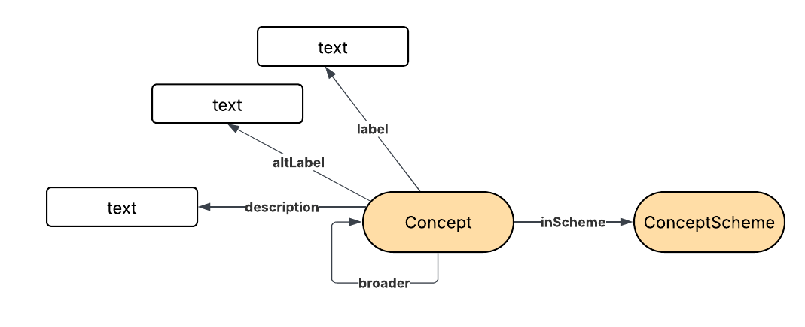

A common model that concepts and the concept schemes they are part of It can be used for describing in a common way sets of refence data or pick lists.

IRI: http://environment.data.gov.uk/ontology:ConceptScheme
IRI: http://environment.data.gov.uk/ontology:inScheme
IRI: http://environment.data.gov.uk/ontology:altLabel
IRI: http://environment.data.gov.uk/ontology:code
IRI: http://environment.data.gov.uk/ontology:definition
IRI: http://environment.data.gov.uk/ontology:description
IRI: http://environment.data.gov.uk/ontology:label
This HTML document was obtained by processing the OWL ontology source code through LODE, Live OWL Documentation Environment, developed by Silvio Peroni .